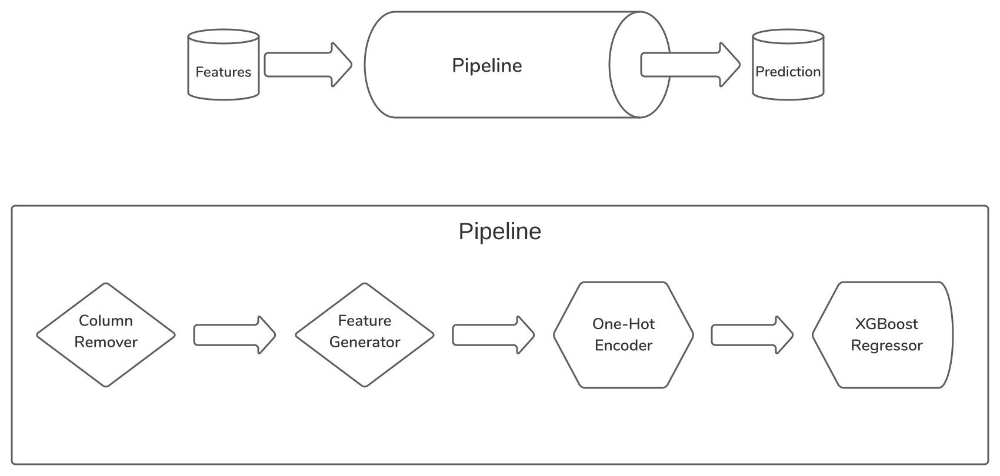

XGBoost - House Price Prediction
2021 May
Ask a home buyer to describe their dream house, and they probably won't
begin with the height of the basement ceiling or the proximity to an
east-west railroad. But this playground competition's dataset proves
that much more influences price negotiations than the number of bedrooms
or a white-picket fence. With 79 explanatory variables describing
(almost) every aspect of residential homes in Ames, Iowa, this
competition challenged us to predict the final price of each home.
Esfira Babajanyan, Hrach Yeghiazaryan and I accepted this challenge.
Although this was our first-ever model, we charged into the unknown
head-on. We built a pipeline capable of determining which features
are useless, capable of generating composite features from existing
ones. The architecture of the pipeline proved to be flexible, allowing
us to do various operations with a single call, for example, grid-searching.
The charge into the unknown made us learn a vast amount from the new
challenges we were facing. I hope everybody gets to experience the
joy of challenging oneself.
The Structure of the Pipeline
The pipeline consists of four steps: the Column Remover, the Feature Generator, the One-Hot Encoder and the Extreme Gradient Boost regressor.
The first step, Column Remover, can be given a list of column names to remove from the data, not letting it pass to the next stage of the pipeline. This pipeline component is beneficial since it allows us to run cross-validation checks on the entire pipeline and compare the scores to other cross-validations run on the pipeline with one column removed, thereby quickly determining whether the removed column affected the score positively or negatively.
The second step, Feature Generator, generates new features from the existing ones. It takes a list of sub-generator functions, which take a data frame and output a dataframe with the additional composite feature. The Feature Generator passes the data to each of the sub-generators and outputs the resulting dataframe. If enough ingredient features are missing from the dataframe due to the Column Remover, the new composite feature is not created.
The third step, One-Hot Encoder, takes the columns that are not numeric and one-hot encodes them. This step is necessary since the final estimator only accepts numerical data.
The final step, Extreme Gradient Boost regressor, learns from the training data provided to it and generates trees that can collectively predict house prices.

The Team
We are a team of students eager to jump into the data science world. With this project, we hoped to learn as much as we could about the challenges data scientists are faced with every day. Luckily, the project was a great success, and it met all of our expectations. We learned what pipelines are and their usefulness, we learned how XGBoost works in theory, we got to tune hyperparameters. We faced many problems which we didn't know we were going to face, helping us further develop our problem-solving skills. This project will stand to be the portal to data science for our team.
Esfira Babajanyan: Data Visualizations, Presentation
Hrach Yeghyazaryan: Data Visualizations, Presentation
Mher Movsisyan: Building the pipeline, Dash-based Project Website
Click here to visit the project GitHub repository
Click here to visit the kaggle notebook